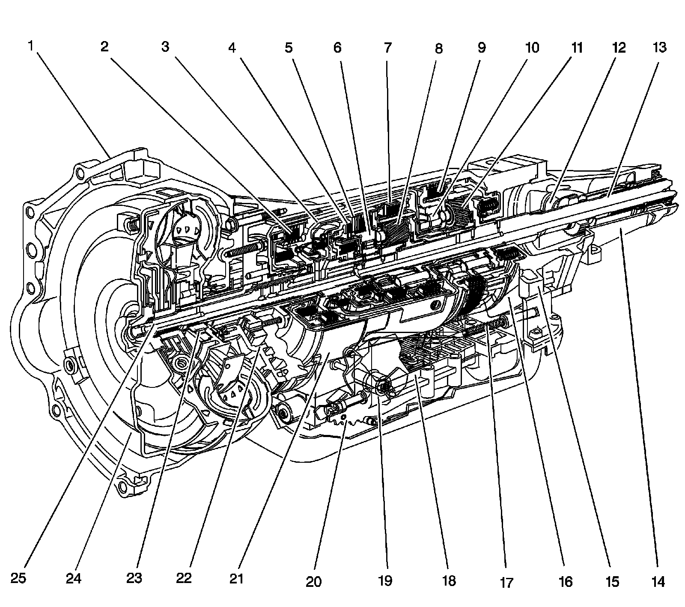
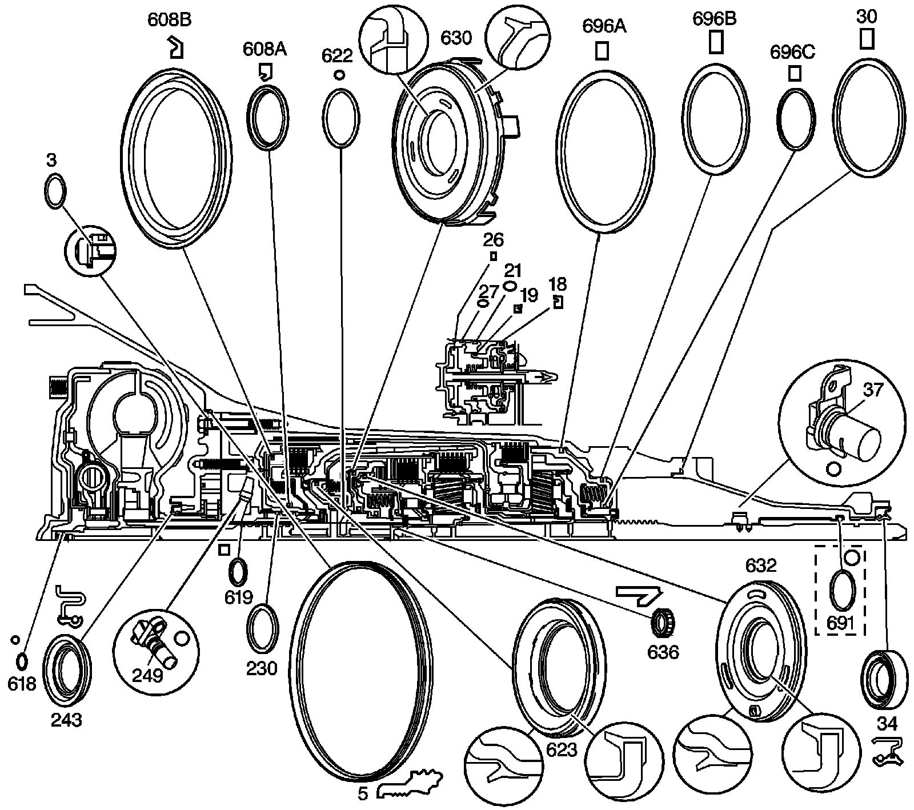
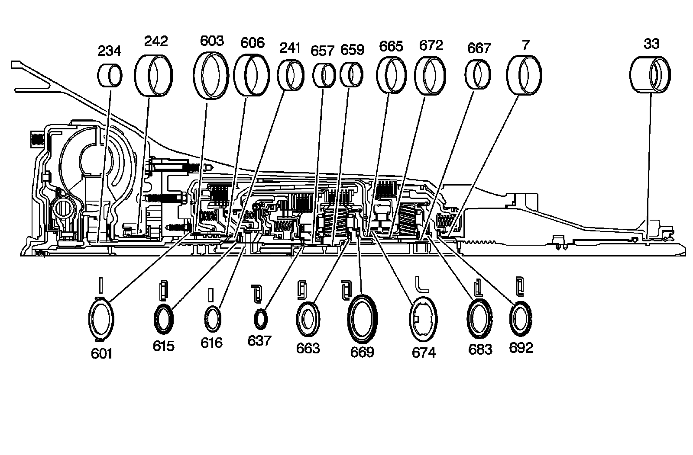
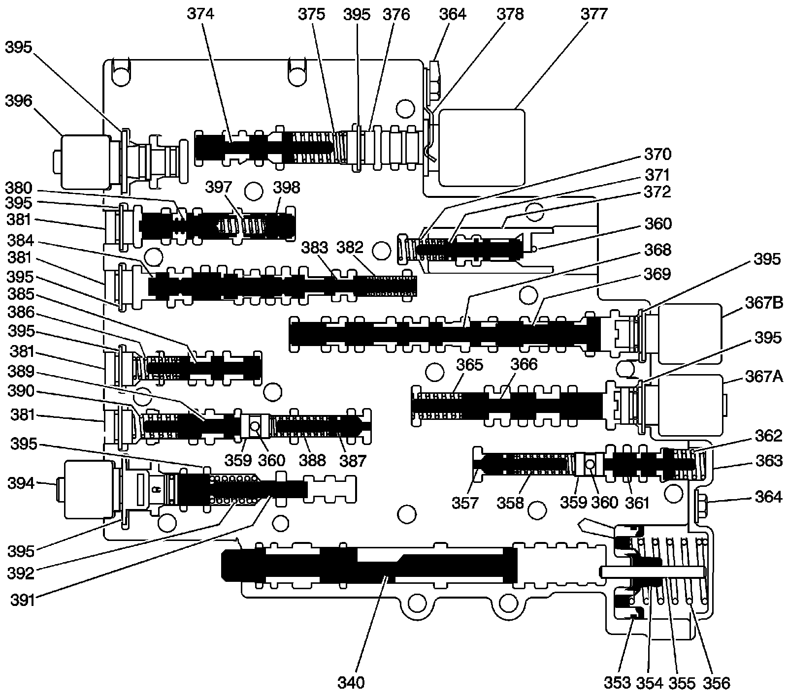

Component Location
Component Location
Components:

1 - Converter Housing
2 - Reverse Input Clutch
3 - Input Clutch Housing
4 - Overrun Clutch
5 - Forward Clutch
6 - Forward Sprag Clutch Assembly
7 - 3-4 Clutch
8 - Input Planetary Gear Set
9 - Lo and Reverse Clutch
10 - Lo Roller Clutch Assembly
11 - Reaction Planetary Gear Set
12 - Speed Sensor
13 - Output Shaft
14 - Case Extension
15 - Main Section Case
16 - Parking Pawl
17 - Parking Lock Actuator Assembly
18 - Control Valve Assembly
19 - Manual Shaft
20 - Inside Detent Lever
21 - 2-4 Band Assembly
22 - Pump Assembly
23 - Stator Roller Clutch
24 - Torque Converter Assembly
25 - Turbine Shaft
Seals:

3 - Pump to Case Bolt O-Ring
5 - Oil Seal - Pump to Case
18 - Oil Seal Ring - 2nd Apply Piston-Outer
19 - Oil Seal Ring - 2nd Apply Piston-Inner
21 - O-Ring Seal
26 - Oil Seal Ring - 4th Apply Piston-Outer
27 - O-Ring Seal - 2-4 Servo Cover
30 - Case Extension to Case Seal
34 - Case Extension Oil Seal Assembly - Model Dependent
37 - O-Ring Seal - Speed Sensor to Case Extension - Model Dependent
230 - Oil Seal Ring - Stator Shaft
243 - Oil Seal Assembly
249 - Input Seed Sensor, or Input Speed Sensor Hole Plug O-ring - Model Dependent
608a - Reverse Input Clutch Seal - Inner
608b - Reverse Input Clutch Seal - Outer
618 - O-Ring Seal - Turbine Shaft/Selective Washer
619 - Oil Seal Ring - Solid
622 - O-Ring Input to Forward Housing Seal
623 - 3rd and 4th Clutch Piston
630 - Forward Clutch Piston
632 - Overrun Clutch Piston
636 - Input Housing to Output Shaft Seal
691 - Output Shaft - Model Dependent Seal
696a - Low and Reverse Clutch - Outer Seal
696b - Low and Reverse Clutch - Center Seal
696c - Low and Reverse Clutch - Inner Seal
Bearings And Bushings:

7 - Case Bushing
33 - Case Extension Bushing
234 - Stator Shaft Bushing - Front
241 - Stator Shaft Bushing - Rear
242 - Oil Pump Body Bushing
601 - Thrust Washer - Pump to Drum
603 - Reverse Input Clutch Bushing - Front
606 - Reverse Input Clutch Bushing - Rear
615 - Stator Shaft/Selective Washer Bearing Assembly
616 - Thrust Washer - Selective
637 - Input Sun Gear Bearing Assembly
657 - Input Sun Gear Bushing - Front
659 - Input Sun Gear Bushing - Rear
663 - Thrust Bearing Assembly - Input Carrier to Reaction Shaft
665 - Reaction Carrier Shaft Bushing - Front
667 - Reaction Carrier Shaft Bushing - Rear
669 - Thrust Washer - Reaction Shaft/Shell
672 - Reaction Gear Bushing
674 - Thrust Washer - Race/Reaction Shell
683 - Thrust Bearing Assembly - Reaction Carrier/Support
692 - Reaction Gear Support to Case Bearing
Valve Trains:

340 - Manual Valve
353 - Forward Accumulator Oil Seal
354 - Forward Accumulator Piston
355 - Forward Accumulator Pin
356 - Forward Accumulator Spring
357 - Forward Abuse Valve
358 - Forward Abuse Valve Spring
359 - Bore Plug
359 - Bore Plug
360 - Coiled Spring Pin
360 - Coiled Spring Pin
360 - Coiled Spring Pin
361 - Low Overrun Valve
362 - Low Overrun Valve Spring
363 - Forward Accumulator Cover
364 - Forward Accumulator Cover Bolt
364 - Forward Accumulator Cover Bolt
365 - 1-2 Shift Valve Spring - Model Dependent
366 - 1-2 Shift Valve - Model Dependent
367a - 1-2 Shift Solenoid Valve
367b - 2-3 Shift Solenoid Valve
368 - 2-3 Shift Valve
369 - 2-3 Shuttle Valve
370 - 1-2 Accumulator Valve Spring
371 - 1-2 Accumulator Valve
372 - 1-2 Accumulator Valve Sleeve
374 - Actuator Feed Limit Valve
375 - Actuator Feed Limit Valve Spring
376 - Bore Plug
377 - Pressure Control Solenoid Valve
378 - Pressure Control Solenoid Retainer
380 - Regulator Apply Valve - Model Dependent
381 - Bore Plug
381 - Bore Plug
381 - Bore Plug
381 - Bore Plug
382 - 4-3 Sequence Valve Spring
383 - 4-3 Sequence Valve
384 - 3-4 Relay Valve
385 - 3-4 Shift Valve
386 - 3-4 Shift Valve Spring
387 - Reverse Abuse Valve
388 - Reverse Abuse Valve Spring
389 - 3-2 Downshift Valve
390 - 3-2 Downshift Valve Spring
391 - 3-2 Control Valve
392 - 3-2 Control Valve Spring
394 - 3-2 Control Solenoid Valve
395 - Bore Plug and Solenoid Retainer
395 - Bore Plug and Solenoid Retainer
395 - Bore Plug and Solenoid Retainer
395 - Bore Plug and Solenoid Retainer
395 - Bore Plug and Solenoid Retainer
395 - Bore Plug and Solenoid Retainer
395 - Bore Plug and Solenoid Retainer
395 - Bore Plug and Solenoid Retainer
395 - Bore Plug and Solenoid Retainer
396 - TCC PWM Solenoid Valve
397 - Regulator Apply Spring
398 - Isolator Valve